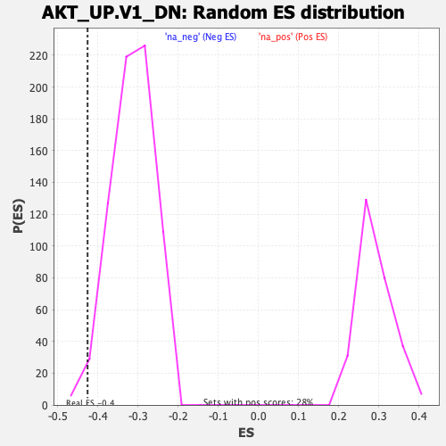

| | | Dataset | DE_genes |
| Phenotype | NoPhenotypeAvailable |
| Upregulated in class | na_neg |
| GeneSet | AKT_UP.V1_DN |
| Enrichment Score (ES) | -0.42586195 |
| Normalized Enrichment Score (NES) | -1.355725 |
| Nominal p-value | 0.016759777 |
| FDR q-value | 0.21483216 |
| FWER p-Value | 0.981 |
Table: GSEA Results Summary
 Fig 1: Enrichment plot: AKT_UP.V1_DN
Fig 1: Enrichment plot: AKT_UP.V1_DN
Profile of the Running ES Score & Positions of GeneSet Members on the Rank Ordered List
| PROBE | GENE SYMBOL | GENE_TITLE | RANK IN GENE LIST | RANK METRIC SCORE | RUNNING ES | CORE ENRICHMENT | | 1 | ALPL | | | 242 | 3.330 | 0.0085 | No |
| 2 | ZNF385A | | | 286 | 2.884 | 0.0268 | No |
| 3 | PDE4B | | | 360 | 2.392 | 0.0395 | No |
| 4 | C1S | | | 637 | 1.391 | 0.0317 | No |
| 5 | PDGFRA | | | 680 | 1.313 | 0.0385 | No |
| 6 | FAS | | | 811 | 1.091 | 0.0380 | No |
| 7 | EIF4E3 | | | 825 | 1.080 | 0.0451 | No |
| 8 | GSTA4 | | | 920 | 0.956 | 0.0459 | No |
| 9 | NID1 | | | 1023 | 0.824 | 0.0453 | No |
| 10 | GAS1 | | | 1138 | 0.731 | 0.0432 | No |
| 11 | PLTP | | | 1144 | 0.724 | 0.0482 | No |
| 12 | MMAA | | | 1201 | 0.678 | 0.0495 | No |
| 13 | CNN2 | | | 1246 | 0.643 | 0.0513 | No |
| 14 | MSRB2 | | | 1491 | 0.522 | 0.0392 | No |
| 15 | UPB1 | | | 1530 | 0.506 | 0.0404 | No |
| 16 | SCARA3 | | | 1755 | 0.406 | 0.0287 | No |
| 17 | ZDHHC6 | | | 1761 | 0.403 | 0.0313 | No |
| 18 | IRS2 | | | 1773 | 0.400 | 0.0335 | No |
| 19 | ITGBL1 | | | 1853 | 0.370 | 0.0311 | No |
| 20 | GRAMD1A | | | 1859 | 0.367 | 0.0334 | No |
| 21 | EDARADD | | | 1881 | 0.359 | 0.0347 | No |
| 22 | KRT5 | | | 1960 | 0.337 | 0.0320 | No |
| 23 | SIX5 | | | 2127 | 0.290 | 0.0233 | No |
| 24 | ASF1A | | | 2201 | 0.266 | 0.0205 | No |
| 25 | SLCO3A1 | | | 2219 | 0.262 | 0.0213 | No |
| 26 | PROM1 | | | 2255 | 0.253 | 0.0209 | No |
| 27 | SLC39A4 | | | 2337 | 0.236 | 0.0173 | No |
| 28 | CHAD | | | 2376 | 0.229 | 0.0165 | No |
| 29 | HIC1 | | | 2473 | 0.214 | 0.0118 | No |
| 30 | GSPT2 | | | 2567 | 0.196 | 0.0071 | No |
| 31 | IL13RA1 | | | 2608 | 0.189 | 0.0059 | No |
| 32 | EFEMP1 | | | 2635 | 0.184 | 0.0055 | No |
| 33 | PHF1 | | | 2795 | 0.162 | -0.0037 | No |
| 34 | TYW1 | | | 2936 | 0.146 | -0.0117 | No |
| 35 | DRAM1 | | | 3333 | 0.111 | -0.0368 | No |
| 36 | CDH16 | | | 3449 | 0.103 | -0.0436 | No |
| 37 | SULT1E1 | | | 3461 | 0.102 | -0.0436 | No |
| 38 | SLC18A1 | | | 3653 | 0.089 | -0.0554 | No |
| 39 | POLI | | | 3818 | 0.081 | -0.0655 | No |
| 40 | GATAD2B | | | 3882 | 0.077 | -0.0691 | No |
| 41 | TNFRSF19 | | | 3937 | 0.074 | -0.0721 | No |
| 42 | OGN | | | 4030 | 0.068 | -0.0776 | No |
| 43 | FANK1 | | | 4076 | 0.066 | -0.0800 | No |
| 44 | GNMT | | | 4483 | 0.043 | -0.1063 | No |
| 45 | NR1D1 | | | 4626 | 0.035 | -0.1153 | No |
| 46 | PM20D1 | | | 5546 | -0.012 | -0.1753 | No |
| 47 | C1R | | | 5634 | -0.017 | -0.1808 | No |
| 48 | MOCOS | | | 5817 | -0.027 | -0.1925 | No |
| 49 | GNA14 | | | 6088 | -0.045 | -0.2098 | No |
| 50 | BTBD2 | | | 6343 | -0.062 | -0.2260 | No |
| 51 | CHST12 | | | 6363 | -0.063 | -0.2268 | No |
| 52 | COL17A1 | | | 6600 | -0.080 | -0.2416 | No |
| 53 | ZNF771 | | | 6665 | -0.086 | -0.2452 | No |
| 54 | SERPINF2 | | | 6816 | -0.096 | -0.2543 | No |
| 55 | MSL2 | | | 6850 | -0.099 | -0.2557 | No |
| 56 | IRS1 | | | 6955 | -0.107 | -0.2617 | No |
| 57 | MRPS6 | | | 7170 | -0.124 | -0.2748 | No |
| 58 | RMND1 | | | 7273 | -0.134 | -0.2805 | No |
| 59 | TP53I13 | | | 7288 | -0.135 | -0.2804 | No |
| 60 | SCCPDH | | | 7446 | -0.148 | -0.2896 | No |
| 61 | SATB1 | | | 7519 | -0.153 | -0.2932 | No |
| 62 | FAH | | | 7665 | -0.167 | -0.3014 | No |
| 63 | SIRT3 | | | 7676 | -0.168 | -0.3008 | No |
| 64 | AQP5 | | | 7704 | -0.171 | -0.3014 | No |
| 65 | ISLR | | | 7841 | -0.183 | -0.3089 | No |
| 66 | FKBP11 | | | 7908 | -0.190 | -0.3118 | No |
| 67 | SNHG6 | | | 7969 | -0.195 | -0.3143 | No |
| 68 | TNNC2 | | | 7973 | -0.196 | -0.3131 | No |
| 69 | KCNN4 | | | 8096 | -0.208 | -0.3195 | No |
| 70 | FUT10 | | | 8254 | -0.224 | -0.3282 | No |
| 71 | LTC4S | | | 8268 | -0.226 | -0.3274 | No |
| 72 | PUS7 | | | 8292 | -0.229 | -0.3272 | No |
| 73 | PDZRN3 | | | 8396 | -0.239 | -0.3322 | No |
| 74 | SYPL2 | | | 8495 | -0.251 | -0.3367 | No |
| 75 | ZNF213 | | | 8816 | -0.288 | -0.3556 | No |
| 76 | EXOSC1 | | | 8861 | -0.293 | -0.3563 | No |
| 77 | RPAP3 | | | 8901 | -0.298 | -0.3567 | No |
| 78 | S1PR3 | | | 8906 | -0.299 | -0.3547 | No |
| 79 | PLEK2 | | | 9195 | -0.335 | -0.3711 | No |
| 80 | TEC | | | 9302 | -0.347 | -0.3755 | No |
| 81 | SH3BGR | | | 9321 | -0.349 | -0.3741 | No |
| 82 | CBS | | | 9656 | -0.397 | -0.3931 | No |
| 83 | RORC | | | 9704 | -0.405 | -0.3932 | No |
| 84 | FHOD3 | | | 9818 | -0.420 | -0.3975 | No |
| 85 | HEBP1 | | | 9926 | -0.436 | -0.4013 | No |
| 86 | CSDC2 | | | 10073 | -0.457 | -0.4075 | No |
| 87 | GHR | | | 10109 | -0.463 | -0.4064 | No |
| 88 | NCAM1 | | | 10124 | -0.465 | -0.4039 | No |
| 89 | CAP2 | | | 10264 | -0.486 | -0.4094 | No |
| 90 | ZC3H12C | | | 10278 | -0.488 | -0.4067 | No |
| 91 | SLC37A4 | | | 10511 | -0.522 | -0.4180 | No |
| 92 | ZFYVE21 | | | 10556 | -0.529 | -0.4171 | No |
| 93 | LPL | | | 10604 | -0.539 | -0.4162 | No |
| 94 | HTRA1 | | | 10634 | -0.543 | -0.4141 | No |
| 95 | ESR2 | | | 10657 | -0.547 | -0.4115 | No |
| 96 | PAQR7 | | | 10690 | -0.552 | -0.4096 | No |
| 97 | LIMD1 | | | 10798 | -0.567 | -0.4124 | No |
| 98 | CHN2 | | | 10996 | -0.596 | -0.4210 | No |
| 99 | HPS1 | | | 11072 | -0.610 | -0.4214 | Yes |
| 100 | BLVRB | | | 11079 | -0.611 | -0.4173 | Yes |
| 101 | ASS1 | | | 11089 | -0.613 | -0.4134 | Yes |
| 102 | PLA2G4A | | | 11189 | -0.634 | -0.4153 | Yes |
| 103 | CDPF1 | | | 11209 | -0.637 | -0.4118 | Yes |
| 104 | MATN2 | | | 11243 | -0.645 | -0.4093 | Yes |
| 105 | MYOC | | | 11297 | -0.656 | -0.4080 | Yes |
| 106 | PI16 | | | 11350 | -0.667 | -0.4065 | Yes |
| 107 | SLC39A13 | | | 11561 | -0.711 | -0.4150 | Yes |
| 108 | RTKN | | | 11626 | -0.726 | -0.4139 | Yes |
| 109 | PDLIM4 | | | 11637 | -0.731 | -0.4092 | Yes |
| 110 | SPCS3 | | | 11673 | -0.737 | -0.4061 | Yes |
| 111 | PKP1 | | | 11812 | -0.764 | -0.4095 | Yes |
| 112 | TCF3 | | | 11857 | -0.773 | -0.4067 | Yes |
| 113 | GALNT16 | | | 11890 | -0.782 | -0.4031 | Yes |
| 114 | ZEB1 | | | 11900 | -0.785 | -0.3979 | Yes |
| 115 | ADHFE1 | | | 11909 | -0.788 | -0.3927 | Yes |
| 116 | DNAJA3 | | | 11984 | -0.801 | -0.3917 | Yes |
| 117 | FBXO32 | | | 12176 | -0.850 | -0.3979 | Yes |
| 118 | BEX4 | | | 12242 | -0.863 | -0.3959 | Yes |
| 119 | FXYD1 | | | 12253 | -0.865 | -0.3902 | Yes |
| 120 | SFRP2 | | | 12328 | -0.885 | -0.3886 | Yes |
| 121 | SLC7A5 | | | 12329 | -0.885 | -0.3821 | Yes |
| 122 | FUT8 | | | 12331 | -0.886 | -0.3757 | Yes |
| 123 | WIF1 | | | 12365 | -0.892 | -0.3713 | Yes |
| 124 | KLF2 | | | 12434 | -0.913 | -0.3691 | Yes |
| 125 | BCS1L | | | 12440 | -0.914 | -0.3627 | Yes |
| 126 | ZSCAN26 | | | 12445 | -0.915 | -0.3563 | Yes |
| 127 | TPD52L1 | | | 12464 | -0.919 | -0.3508 | Yes |
| 128 | KRT15 | | | 12520 | -0.933 | -0.3475 | Yes |
| 129 | CAV2 | | | 12546 | -0.940 | -0.3423 | Yes |
| 130 | TULP3 | | | 12565 | -0.944 | -0.3366 | Yes |
| 131 | PDIA5 | | | 12569 | -0.945 | -0.3298 | Yes |
| 132 | POLD2 | | | 12687 | -0.976 | -0.3304 | Yes |
| 133 | NT5DC3 | | | 12756 | -0.999 | -0.3275 | Yes |
| 134 | RAMP1 | | | 12781 | -1.005 | -0.3217 | Yes |
| 135 | ANGPTL4 | | | 12808 | -1.014 | -0.3160 | Yes |
| 136 | IL17RC | | | 12872 | -1.036 | -0.3125 | Yes |
| 137 | RCE1 | | | 12964 | -1.065 | -0.3107 | Yes |
| 138 | AMPD2 | | | 13081 | -1.100 | -0.3102 | Yes |
| 139 | SCARA5 | | | 13103 | -1.107 | -0.3035 | Yes |
| 140 | MERTK | | | 13130 | -1.114 | -0.2970 | Yes |
| 141 | SMARCD3 | | | 13165 | -1.125 | -0.2910 | Yes |
| 142 | FMO3 | | | 13190 | -1.133 | -0.2843 | Yes |
| 143 | CDC42BPA | | | 13298 | -1.174 | -0.2827 | Yes |
| 144 | FMO2 | | | 13378 | -1.205 | -0.2791 | Yes |
| 145 | IFRD2 | | | 13477 | -1.244 | -0.2764 | Yes |
| 146 | RNF25 | | | 13555 | -1.276 | -0.2721 | Yes |
| 147 | TSPYL4 | | | 13572 | -1.281 | -0.2638 | Yes |
| 148 | CD248 | | | 13744 | -1.356 | -0.2650 | Yes |
| 149 | PDLIM3 | | | 13749 | -1.361 | -0.2553 | Yes |
| 150 | AXIN2 | | | 13902 | -1.424 | -0.2549 | Yes |
| 151 | KCTD12 | | | 13985 | -1.461 | -0.2495 | Yes |
| 152 | RECK | | | 14033 | -1.487 | -0.2417 | Yes |
| 153 | SLIT3 | | | 14181 | -1.591 | -0.2397 | Yes |
| 154 | STAT5A | | | 14602 | -1.876 | -0.2534 | Yes |
| 155 | IFFO1 | | | 14682 | -1.955 | -0.2443 | Yes |
| 156 | PDE9A | | | 14728 | -1.995 | -0.2326 | Yes |
| 157 | DPT | | | 14734 | -2.002 | -0.2183 | Yes |
| 158 | ITIH5 | | | 14765 | -2.028 | -0.2054 | Yes |
| 159 | ID3 | | | 14771 | -2.037 | -0.1909 | Yes |
| 160 | TIMP3 | | | 14893 | -2.151 | -0.1830 | Yes |
| 161 | EFEMP2 | | | 14909 | -2.176 | -0.1681 | Yes |
| 162 | RPS6KB2 | | | 14916 | -2.185 | -0.1525 | Yes |
| 163 | TSPAN4 | | | 14951 | -2.238 | -0.1384 | Yes |
| 164 | VSIG2 | | | 14957 | -2.249 | -0.1223 | Yes |
| 165 | PTGIS | | | 15073 | -2.410 | -0.1121 | Yes |
| 166 | PPP1R3C | | | 15142 | -2.535 | -0.0980 | Yes |
| 167 | TCF21 | | | 15255 | -2.798 | -0.0849 | Yes |
| 168 | SASH1 | | | 15271 | -2.852 | -0.0650 | Yes |
| 169 | RXRB | | | 15365 | -3.320 | -0.0468 | Yes |
| 170 | KCNK3 | | | 15392 | -3.489 | -0.0230 | Yes |
| 171 | ITPKB | | | 15421 | -3.840 | 0.0033 | Yes |
Table: GSEA details [plain text format]

Fig 2: AKT_UP.V1_DN: Random ES distribution
Gene set null distribution of ES for AKT_UP.V1_DN